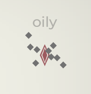

Senjata Utama
Senjata utama adalah senjata awal di Glyphica dan memainkan peran sentral dalam permainan. Ketika Kamu mengetik kata yang ditampilkan di atas musuh, senjata utama akan mengunci musuh tersebut sebagai target. Setiap senjata utama memiliki efek dan mekanisme yang unik, sehingga membutuhkan strategi yang berbeda untuk digunakan secara efektif.
Sementara beberapa senjata utama menekankan kecepatan mengetik (WPM), senjata lainnya menuntut pendekatan yang lebih taktis. Seperti senjata lain dalam game ini, senjata utama dapat ditingkatkan dan berevolusi, meningkatkan kemampuan dan keefektifannya seiring dengan kemajuan Kamu.
Daftar Senjata Utama
RepeaterSinar PanasRentetanTembakan LendirRepeater
Tags: Kinetik, Utama
Senjata penghancur yang menembakkan sejumlah peluru dalam semburan pendek.
Evolusi
Nama |
Deskripsi |
| Taring Es |
Efek:
Kerusakan Dingin: +10
Peluang Membekukan: 3%
Mempengaruhi kerusakan dasar dan dipengaruhi oleh pengubah kerusakan Dingin. |
| Taring Es II |
Efek:
Kerusakan Dingin: +20
Kerusakan Kinetik: -10
Mempengaruhi kerusakan dasar. |
| Rikoset |
Efek:
Rantai Proyektil: 3
Proyektil Repeater memantul ke target terdekat secara acak, memberikan 50% kerusakan pada serangan setelah yang pertama. |
| Rikoset II |
Efek:
Rantai Proyektil: +2 |
| Shotgun |
Efek:
Jumlah Proyektil: +5
Penyebaran Proyektil: +400%
Kerusakan Kinetik: -10
Repeater sekarang menembakkan beberapa proyektil yang lebih lemah dengan penyebaran yang besar. Pengubah kerusakan mempengaruhi kerusakan dasar. |
| Shotgun II |
Efek:
Jumlah Proyektil: +5
Penyebaran Proyektil: +100% |
| Peluru Ledak |
Efek:
Kerusakan Akibat Ledakan: +10
Kerusakan Kinetik: -10
Mempengaruhi kerusakan dasar. Repeater sekarang menggunakan amunisi peledak yang memberikan kerusakan eksplosif dalam radius kecil. |
| Peluru Ledak II |
Efek:
Kerusakan Eksplosif: +15
Kerusakan Kinetik: -10
Jangkauan ledakan untuk peluru Repeater sedikit meningkat. |
Peningkatan
Nama |
Deskripsi |
| Pembelajaran yang Diperkuat |
Evolusi: +10 Membunuh |
| Data Pertarungan |
Evolusi: +20 Membunuh |
| Pengawasan Mahir |
Evolusi: +30 Membunuh |
| Jaket Full Metal |
Kerusakan: +10% |
| Upgrade Penembus Baja |
Kerusakan: +20% |
| Peningkatan Penetrator |
Kerusakan: +30% |
| Penargetan Lanjutan |
Peluang Kritikal: +1%
Kerusakan Kritikal: +50% |
| Sistem Panduan Presisi |
Peluang Kritikal: +2%
Kerusakan Kritikal: +100% |
| Integrasi Mata Elang |
Peluang Kritikal: +3%
Kerusakan Kritikal: +200% |
| Peningkatan Muatan |
Jarak: +25% |
Sinar Panas
Tags: Panas, Utama, D.O.T.
Menembakkan seberkas cahaya terkonsentrasi yang sangat akurat dan konstan yang menimbulkan kerusakan seiring waktu.
Evolusi
Nama |
Deskripsi |
| Tembakan Es |
Efek:
Kerusakan Panas: -25
Kerusakan Dingin: +25
Peluang Membekukan: 8%
Mempengaruhi kerusakan dasar. Jenis kerusakan Sinar Panas akan menjadi Dingin dan memiliki peluang lebih besar untuk menimbulkan Freeze. |
| Tembakan Es II |
Efek:
Kerusakan Dingin: +20
Mempengaruhi kerusakan dasar. |
| Refleksi |
Sinar Panas sekarang dapat melewati musuh dan memantulkan 2x dari tepi layar. |
| Refleksi II |
Sinar Panas sekarang memantulkan 4x dari tepi layar. |
| Pedang Dua Mata |
Tembakan ke arah yang berlawanan. Semua evolusi dan peningkatan berlaku untuk kedua tembakan. |
| Blaster |
Efek:
Laju Tembakan: +500%
Sinar Panas sekarang menembakkan proyektil laser multi-pukulan independen, bukan sinar konstan, yang masih dihitung sebagai senjata D.O.T.. |
| Blaster II |
Efek:
Panjang Proyektil: +100%
Kerusakan: +40% |
Peningkatan
Nama |
Deskripsi |
| Inti Fusi |
Evolusi: +10Bunuh |
| Api Primordial |
Evolusi: +20Bunuh |
| Neraka Apokaliptik |
Evolusi: +30Bunuh |
| Api yang berkobar |
Kerusakan: +10% |
| Panas menyengat |
Kerusakan: +20% |
| Ledakan Dahsyat |
Kerusakan: +30% |
| Konvergensi |
Ketebalan Sinar: +20%
(Jarak) |
| Pancaran |
Ketebalan Sinar: +40%
(Jarak) |
| Sinar Tempaan |
Ketebalan Sinar: +60%
(Jarak) |
| Pengapian Cepat |
Laju Tembakan: +10% |
| Kecepatan Membara |
Laju Tembakan: +20% |
| Lonjakan Neraka |
Laju Tembakan: +30% |
Rentetan
Tags: Peledak, Utama
Menembakkan rentetan roket peledak ke target dan sekitarnya. Mengisi ulang daya seiring waktu.
Evolusi
Nama |
Deskripsi |
| Rangkaian Roket |
Rentetan serangan sekarang akan menembakkan 3 - 6 rudal per bar amunisi, bukan 2 - 5. |
| Rangkaian Roket II |
Rentetan serangan sekarang akan menembakkan 4 - 7 rudal per bar amunisi, bukan 3 - 6. |
| Munisi Seismik |
Rudal menancapkan diri ke dalam tanah alih-alih meledak dan menghasilkan denyut ledakan selama beberapa detik berikutnya. |
| Munisi Seismik II |
Denyut Amunisi Seismik:
Jarak: +25%
Durasi: +25% |
| Pasokan ulang |
Pengambil Pasokan sekarang akan muncul. Mengaktifkan Pengambilan ini akan mengisi ulang senjata utama kamu sepenuhnya dan memberikan dorongan kerusakan 30% untuk tembakan berikutnya. |
| Pasokan ulang II |
Pengambil Pasokan sekarang juga memberikan 30% peningkatan jangkauan ledakan untuk tembakan berikutnya. |
Peningkatan
Nama |
Deskripsi |
| Rentetan Tinggi |
Evolusi: +10 |
| Pengepungan Pamungkas |
Evolusi: +20 |
| Tembakan Apokaliptik |
Evolusi: +30 |
| Dampak Ledakan |
Kerusakan +10% |
| Serangan Kehancuran |
Kerusakan +20% |
| Ledakan Dahsyat |
Kerusakan +30% |
| Jangkauan Diperluas |
Jangkauan +10% |
| Muatan Jarak Jauh |
Jangkauan +20% |
| Serangan Sudut Lebar |
Jangkauan +30% |
| Reload Cepat |
Kecepatan Reload: +10% |
| Persediaan Ulang Cepat |
Kecepatan Reload: +20% |
| Isi Ulang Cepat |
Kecepatan Reload: +30% |
Tembakan Lendir
Tags: Kimia, Utama, D.O.T.
Menembakkan gumpalan lendir ke lawan untuk melumpuhkan dan merusak mereka.
Evolusi
Nama |
Deskripsi |
| Gelembung Slime |
Gelembung Slime muncul dalam Zona Percikan.
Saat diaktifkan, Gelembung Slime akan meledak, menimbulkan kerusakan dalam radius kecil dan menciptakan Zona Percikan tambahan. |
| Gelembung Slime II |
Meningkatkan terjadinya Gelembung Slime.
Gelembung Slime memiliki peluang 50% untuk meledak secara otomatis saat habis masa berlakunya. |
| Infestasi |
Efek Tembakan Percikan:
Peluang Efek Status: +5%
Efek Global:
Kerusakan Efek Status: +30% |
| Infestasi II |
Musuh yang terbunuh oleh Efek Status akan meledak ke dalam Zona Percikan. |
| Lava |
Efek:
Kerusakan Kimia: -100%
Kerusakan Panas: +40
Mempengaruhi kerusakan dasar. Jenis kerusakan Tembakan Percikan akan menjadi Panas. |
| Lava II |
Efek:
Kerusakan Panas: +20
Mempengaruhi kerusakan dasar. |
| Virulensi |
Efek Zona Percikan:
Durasi: -50%
Zona Percikan secara perlahan-lahan bertambah besar dari waktu ke waktu. |
Peningkatan
Nama |
Deskripsi |
| Efisiensi Beracun |
Evolusi: +10 |
| Penguasaan Bahaya |
Evolusi: +20 |
| Plaguebringer |
Evolusi: +30 |
| Percikan Beracun |
Kerusakan: +10% |
| Semburan Racun |
Kerusakan: +20% |
| Awan Malapetaka |
Kerusakan: +30% |
| Uap Abadi |
Jangkauan: 10% |
| Penyebaran Neurotoksin |
Jangkauan: 20% |
| Kebocoran Stratosfer |
Jangkauan: 30% |
| Pembuangan Lambat |
Durasi: 10% |
| Waktu Paruh yang Diperpanjang |
Durasi: 20% |
| Kejatuhan Tak Berujung |
Durasi: 30% |
Beranda /
Peningkatan Level Senjata Peningkatan Level Senjata
Peningkatan level Senjata diperoleh selama bermain saat Kamu naik level. Setelah dipilih, senjata tersebut akan ditambahkan ke gudang senjata Kamu. Setiap senjata memiliki metode aktivasi yang unik, tetapi sebagian besar dapat dipicu dengan mengetik dan membidik dengan senjata utama.
Maksimal empat senjata dapat diperoleh dengan cara ini. Setelah senjata ditambahkan ke gudang senjata Kamu, peningkatannya tersedia di kumpulan peningkatan level, sehingga Kamu dapat meningkatkan kemampuannya seiring kemajuan Kamu.
Daftar Peningkatan Level Senjata
HantuPenjagaRanjau TeslaOsilatorMeteorPemburuPemotongLadang RanjauPerangkap PisauPengorbitPelindungHantu
Tags: Kinetik, Drone
Melengkapi kata yang mengandung glif a, e, o Memunculkan drone cepat jarak dekat yang setara dengan jumlah drone yang cocok.
Evolusi
Nama |
Deskripsi |
| Supercharged |
Setiap Hantu ke-20 yang muncul adalah Hantu SUPER.
Hantu Super:
+100% Kerusakan
+50% Durasi
+50% Kecepatan |
| Penghancur Diri |
Efek:
Kerusakan Eksplosif: +50
Saat Hantu berakhir, ia akan menghancurkan dirinya sendiri, menghasilkan Kerusakan Eksplosif. Mempengaruhi kerusakan dasar dan dipengaruhi oleh pengubah kerusakan Ledakan. |
| Penghancur Diri II |
Efek:
Kerusakan Eksplosif: +50
Jangkauan: +30%
Mempengaruhi kerusakan dasar. |
| Bahan Bakar Mudah Menguap |
Efek:
Kecepatan: +50% |
| Bahan Bakar Mudah Menguap II |
Efek:
Kecepatan: 50%
Durasi: -25% |
Peningkatan
Nama |
Deskripsi |
| Pembelajaran Hantu |
Evolusi: +10 Bunuh |
| Keahlian Spektral |
Evolusi: +20 Bunuh |
| Phantasmagoria |
Evolusi: +30 Bunuh |
| Taktik Kawanan |
Kerusakan: +10% |
| Serangan Terkoordinasi |
Kerusakan: +20% |
| Strategi Pikiran Kelompok |
Kerusakan: +30% |
| Baterai Ricodium |
Durasi: +10% |
| Sel Berenergi |
Durasi: +20% |
| Pengisian Daya Inti yang Berlebihan |
Durasi: +30% |
| Perakitan Mandiri |
Menyelesaikan kata di atas 7 glyph panjangnya memunculkan Spectre tambahan. |
Penjaga
Tags: Panas, Turret
Menerjunkan menara otomatis yang menembaki musuh di dalam jangkauan.
Evolusi
Nama |
Deskripsi |
| Jaringan Pertahanan |
Efek:
Turret: +1 |
| Inti Padat |
Efek:
Kerusakan Kinetik: +10
Peluang Pendarahan: 3%
Mempengaruhi kerusakan dasar dan dipengaruhi oleh pengubah kerusakan kinetik. |
| Inti Padat II |
Efek:
Kerusakan Kinetik: +20
Kerusakan Panas: -10
Mempengaruhi kerusakan dasar. |
| Protokol Darurat |
Setiap kali Perisai Daya dihancurkan, Penjaga akan masuk ke mode Protokol Darurat selama 10 detik.
Selama Protokol Darurat:
Jangkauan: +50%
Laju Tembakan: +100% |
| Protokol Darurat |
Selama Protokol Darurat:
Kerusakan: +50%
Kecepatan Rotasi: +50% |
Peningkatan
Nama |
Deskripsi |
| Pengamat tajam |
Evolusi: +10 Bunuh |
| Penjaga Awas |
Evolusi: +20 Bunuh |
| Overwatch Abadi |
Evolusi: +30 Bunuh |
| Pemicu Rambut |
Tingkat Tembakan: +10% |
| Akselerator Api Cepat |
Tingkat Tembakan: +20% |
| Protokol Kilat |
Tingkat Tembakan: +30% |
| Peluru Penusuk Armor |
Kerusakan: +10% |
| Penghancur Armor Taktis |
Kerusakan: +20% |
| Amunisi Penembus Ekso |
Kerusakan: +30% |
| Optik yang diperbesar |
Jarak: +10% |
| Cakupan yang Ditingkatkan |
Jarak: +20% |
| Sistem Penglihatan Presisi |
Jarak: +30% |
Ranjau Tesla
Tags: Listrik, Turret, D.O.T.
Melengkapi kata yang dimulai dengan glif b, c, d, e Menerjunkan turret listrik yang menimbulkan kerusakan seiring waktu.
Evolusi
Nama |
Deskripsi |
| Tumpukan Koil |
juga akan memunculkan Tambang Tesla sebagai tambahan dari glif yang sudah ada. |
| Luka Bakar Setrum |
Efek:
Kerusakan Panas: +4
Peluang Terbakar: 3%
Mempengaruhi kerusakan dasar dan dipengaruhi oleh pengubah kerusakan Panas. |
| Luka Bakar Setrum II |
Efek:
Kerusakan Panas: +8
Kerusakan Listrik: -4
Mempengaruhi kerusakan dasar. |
| Area Terlarang |
Musuh dalam jangkauan Ranjau Tesla memiliki 20% peningkatan peluang untuk mendapatkan status Statis dari sumber kerusakan Listrik. |
| Area Terlarang II |
Kerusakan statis meningkat sebesar 5 dan jangkauan meningkat sebesar 30%. Ini berlaku untuk Statis yang ditimbulkan oleh semua sumber dan mempengaruhi kerusakan dasar. |
Peningkatan
Nama |
Deskripsi |
| Penguasaan Konduktif |
Evolusi: +10 Bunuh |
| Keahlian Tegangan |
Evolusi: +20 Bunuh |
| Amplificatorium |
Evolusi: +30 Bunuh |
| Kumparan yang diperkuat |
Durasi: +10% |
| Konduktor Tangguh |
Durasi: +20% |
| Induksi Bertegangan tinggi |
Durasi: +30% |
| Pengisian Berlebihan |
Kerusakan: +10% |
| Lonjakan Tegangan |
Kerusakan: +20% |
| Penguatan Badai |
Kerusakan: +30% |
| Bidang yang diperkuat |
Jarak: +10% |
| Jangkauan Horizon |
Jarak: +20% |
| Tak Terbatas |
Jarak: +30% |
| Lonjakan Statis |
Peluang Statis: +1% |
| Konduksi Gelap |
Peluang Statis: +3% |
| Kelebihan Voltase |
Peluang Statis: +5% |
Osilator
Tags: Panas, Remot
Menembakkan aliran partikel yang berosilasi ke arah target terakhir kamu.
Evolusi
Nama |
Deskripsi |
| Berkepala Dua |
Aliran proyektil Osilator tambahan ditembakkan ke arah berlawanan. |
| Bola Petir |
Efek:
Kerusakan Listrik: +3
Peluang Statis: 3%
Mempengaruhi kerusakan dasar dan dipengaruhi oleh pengubah kerusakan Listrik. |
| Bola Petir II |
Efek:
Kerusakan Listrik: +6
Kerusakan Akibat Panas: -3
Mempengaruhi kerusakan dasar. |
| Plasma Stabil |
Proyektil osilator sekarang menembus musuh. Musuh yang terkena serangan pertama akan menerima 50% kerusakan. |
| Plasma Stabil II |
Kerusakan akibat penyalaan meningkat sebesar 5. Ini berlaku untuk Ignite yang ditimbulkan oleh semua sumber dan mempengaruhi kerusakan dasar. |
Peningkatan
Nama |
Deskripsi |
| Harmonik Presisi |
Evolusi: +10 Bunuh |
| Resonator Adaptif |
Evolusi: +20 Bunuh |
| Waveforma |
Evolusi: +30 Bunuh |
| Pengapian Plasma |
Kerusakan: +10% |
| Pelepasan Kuantum |
Kerusakan: +20% |
| Letusan Nova |
Kerusakan: +30% |
| Pengeboman Karpet |
Sebaran: +10% |
| Jangkauan Orbic |
Sebaran: +20% |
| Ekspansi Kuantum |
Sebaran: +30% |
| Fokus Kritikal |
Peluang Kritis: +1%
Kritik Mult: +50% |
| Gelombang Presisi |
Peluang Kritis: +2%
Kritik Mult: +100% |
| Lonjakan Kuantum |
Peluang Kritis: +3%
Kritik Mult: +200% |
Meteor
Tags: Peledak, Remot
Secara berkala memunculkan penanda target di lokasi acak yang dapat diaktifkan untuk memulai pemboman orbital.
Evolusi
Nama |
Deskripsi |
| Pengawasan |
Meteor kini mendapat dua opsi target, bukan satu. |
| Pengawasan II |
Meteor mendapat tiga opsi target, bukan dua. |
| Hujan Es |
Efek:
Kerusakan Peledak: -65
Kerusakan Dingin: +25
Peluang Pembekuan: 5%
Mempengaruhi kerusakan dasar dan dipengaruhi oleh pengubah kerusakan Dingin. |
| Hujan Es II |
Efek:
Kerusakan Dingin: +20
Peluang Pembekuan: +5% |
| Tanpa Henti |
Efek:
Jangkauan: -50%
Laju Tembakan: -50%
Meteor kini menembak terus-menerus, bergerak menuju lokasi target terakhir kamu. |
| Tanpa Henti II |
Efek:
Kecepatan: +50%
Peluang Kritik: +10% |
Peningkatan
Nama |
Deskripsi |
| Kru yang bersemangat |
Evolusi: +10 Bunuh |
| Wawasan Orbital |
Evolusi: +20 Bunuh |
| Pengamat Veteran |
Evolusi: +30 Bunuh |
| Pengeboman Presisi |
Kerusakan: +10% |
| Peningkat Dampak |
Kerusakan: +20% |
| Apokalips |
Kerusakan: +30% |
| Akselerator Relay |
Tingkat Pemijahan: +10% |
| Sequencer Peluncur |
Tingkat Pemijahan: +20% |
| Hujan Kematian |
Tingkat Pemijahan: +30% |
| Modul Tembakan Jarak Jauh |
Jarak: +10% |
| Susunan Amplifikasi |
Jarak: +20% |
| Jangkauan Bencana Alam |
Jarak: +30% |
Pemburu
Tags: Listrik, Drone, D.O.T.
Melengkapi kata yang mengandung glif i, o, u memunculkan drone yang menembakkan sinar listrik dengan jumlah setara dengan jumlah yang cocok di atas.
Evolusi
Nama |
Deskripsi |
| Pemburu Elit |
Setiap Pemburu ke-12 yang muncul adalah Pemburu Elit.
Pemburu Elit:
+100% Damage
+50% Durasi
+50% Kecepatan
+50% Jangkauan |
| Pasak Listrik |
Efek:
Kerusakan Kinetik: +5
Peluang Pendarahan: 3%
Pemburu sekarang menembakkan proyektil, bukan lagi aliran listrik. Mempengaruhi kerusakan dasar dan dipengaruhi oleh pengubah kerusakan kinetik. |
| Pasak Listrik II |
Efek:
Kerusakan Kinetik: +10
Kerusakan Listrik: -5
Mempengaruhi kerusakan dasar. |
| Rantai Petir |
Serangan Pemburu sekarang berantai ke 1 musuh terdekat. |
| Rantai Petir II |
Serangan Pemburu sekarang berantai ke 2 musuh terdekat. |
Peningkatan
Nama |
Deskripsi |
| Fokus yang Ditajamkan |
Evolusi: +10 Bunuh |
| Presisi Guncangan |
Evolusi: +20 Bunuh |
| Predator |
Evolusi: +30 Bunuh |
| Lonjakan Listrik |
Kerusakan: +10% |
| Penguat Badai |
Kerusakan: +20% |
| Pengisian Berlebih Kuantum |
Kerusakan: +30% |
| Tembakan Terfokus |
Jarak: +10% |
| Pelepasan Terarah |
Jarak: +20% |
| Air Terjun Petir |
Jarak: +30% |
| Efisiensi Energi |
Durasi: +10% |
| Penghancuran yang Dioptimalkan |
Durasi: +20% |
| Matriks Abadi |
Durasi: +30% |
Pemotong
Tags: Kinetik, Remot
Memunculkan pedang berputar yang besar pada tembakan senjata utama yang bergerak ke tepi layar, melukai semua musuh yang dilewatinya.
Evolusi
Nama |
Deskripsi |
| Dual Wield |
Efek:
+1 Pemotong |
| Pedang Api |
Efek:
Kerusakan Panas: +7
Peluang Terbakar: +3%
Mempengaruhi kerusakan dasar dan dipengaruhi oleh pengubah kerusakan Panas. |
| Pedang Api II |
Efek:
Kerusakan Panas: +14
Kerusakan Kinetik: -7
Mempengaruhi kerusakan dasar. |
| Bumerang |
Pemotong sekarang kembali ke Senjata Utama setelah mencapai tepi layar. |
| Bumerang II |
Efek:
Kecepatan: +75%
Laju Tembakan: +50% |
| Pertumpahan darah |
Efek:
Kerusakan pada Musuh yang Mengalami Pendarahan: +10%
Musuh yang mengalami pendarahan yang terbunuh oleh Pemotong memiliki 10% kesempatan untuk mengaktifkan Kerusakan Ganda. |
| Pertumpahan darah II |
Efek:
Kerusakan pada Musuh yang Mengalami Pendarahan: +25%
Peluang untuk mendapatkan Kerusakan Ganda menjadi 25%. |
| Peluncur Gergaji |
Efek:
Peluang Pendarahan: +7%
Kerusakan Pendarahan: +25%
Peluang Pendarahan berulang: +7%
Pemotong diganti dengan dua mata gergaji yang lebih kecil dengan kecepatan serangan tinggi, ditembakkan dalam pola kerucut. |
| Peluncur Gergaji II |
Efek:
Peluang Pendarahan: +12%
Kerusakan Pendarahan: +50%
Peluang Pendarahan berulang: +12%
Meningkatkan jumlah mata gergaji yang ditembakkan sebanyak 2. |
Peningkatan
Nama |
Deskripsi |
| Rautan |
Evolusi: +10 Bunuh |
| Keahlian Menyayat |
Evolusi: +20 Bunuh |
| Guillotine |
Evolusi: +30 Bunuh |
| Tepi yang Dipertajam |
Kerusakan: +10% |
| Pedang Tempaan |
Kerusakan: +20% |
| Ujung Silet |
Kerusakan: +30% |
| Peningkatan Rotor |
Tingkat Putaran: +10% |
| Rotasi Turbo |
Tingkat Putaran: +20% |
| Rotor Hiperdrive |
Tingkat Putaran: +30% |
| Pedang yang Diperpanjang |
Jarak: +10% |
| Jangkauan yang Diperluas |
Jarak: +20% |
| Master Jangkauan Panjang |
Jarak: +30% |
| Ujung Silet |
Peluang Pendarahan: +1% |
| Surat darah |
Peluang Pendarahan: +3% |
| Serasi |
Peluang Pendarahan: +5% |
Ladang Ranjau
Tags: Peledak, Drone
Melengkapi kata yang dimulai dengan glif f, g, h, i Memunculkan ranjau yang bergerak lambat yang meledak saat bersentuhan dengan musuh.
Evolusi
Nama |
Deskripsi |
| Minelayer |
juga akan memunculkan Ranjau sebagai tambahan dari glif yang ada. |
| Infusi |
Efek:
Kerusakan Kimia: +20
Peluang Hawar: 10%
Mempengaruhi kerusakan dasar dan dipengaruhi oleh pengubah kerusakan kimia. |
| Infus II |
Efek:
Peluang Hawar: +10%
Kerusakan Ledakan: -50
Mempengaruhi kerusakan dasar. |
| Pencari Pemburu |
Efek:
Kecepatan: +200%
Jangkauan: -50%
Ranjau mendapatkan gerakan mengejar ke arah target acak. |
| Pencari Pemburu II |
Efek:
Ranjau Muncul: +1
Kecepatan: +100% |
| Bom Kotoran |
Efek:
Kerusakan Kimia: +5
Kerusakan Senjata Percikan: +10%
Ranjau melepaskan 3 genangan lumpur saat meledak. |
| Bom Kotoran II |
Efek:
Kerusakan Kimia: +5
Kerusakan Senjata Percikan: +10%
Saat bergerak, ranjau menembakkan genangan lumpur secara berkala. |
| Ranjau Rekursif |
Turret Utama secara berkala memunculkan sejumlah ranjau berdasarkan setengah dari jumlah ranjau Minefield, dibulatkan ke bawah. Tingkat pemijahan ditentukan oleh stat Laju Tembakan Minefield. |
| Ranjau Rekursif II |
Ranjau Rekursif memunculkan 30% lebih cepat dan menghasilkan satu ranjau tambahan. |
Peningkatan
Nama |
Deskripsi |
| Detonator AI |
Evolusi: +10 Bunuh |
| Balistik Presisi |
Evolusi: +20 Bunuh |
| Devastator |
Evolusi: +30 Bunuh |
| Penguat Muatan |
Kerusakan: +10% |
| Persenjataan Berat |
Kerusakan: +20% |
| Peningkatan hulu ledak |
Kerusakan: +30% |
| Perluasan Jangkauan |
Jarak: +10% |
| Cakupan Medan Perang |
Jarak: +20% |
| Radius Tanpa Batas |
Jarak: +30% |
| Pembuat Cepat |
+1 Ranjau Dimunculkan |
| Lingkaran Umpan Balik |
Ranjau Rekursif:
Tingkat Pemunculan: +20%
( Kecepatan Tembakan) |
| Protokol Cascade |
Ranjau Rekursif:
Tingkat Pemunculan: +30%
( Kecepatan Tembakan) |
Perangkap Pisau
Tags: Kinetik, Turret
Melengkapi kata yang dimulai dengan glif j, k, l, m Menyebarkan perangkap bilah empat jari yang berputar.
Evolusi
Nama |
Deskripsi |
| Tempat Penyimpanan Pedang |
juga akan memunculkan Perangkap Pisau sebagai tambahan dari mesin terbang yang sudah ada. |
| Lapisan Racun |
Efek:
Kerusakan Kimia: +5
Peluang Hawar: 10%
Mempengaruhi kerusakan dasar dan dipengaruhi oleh pengubah kerusakan Kimia. |
| Lapisan Racun II |
Efek:
Kerusakan Kimia: +5
Peluang Hawar: +5%
Mempengaruhi kerusakan dasar. |
| Pedang Sawtooth |
Perangkap Pisau menambahkan Peluang Kritikal untuk menimbulkan Pendarahan. |
| Pedang Sawtooth II |
Kerusakan Pendarahan meningkat sebesar 5. Ini berlaku untuk Pendarahan yang ditimbulkan oleh semua sumber dan mempengaruhi kerusakan dasar. |
Peningkatan
Nama |
Deskripsi |
| Jerat yang Disempurnakan |
Evolusi: +10 Bunuh |
| Pusaran Reaktif |
Evolusi: +20 Bunuh |
| Lacerator |
Evolusi: +30 Bunuh |
| Pemotong yang Dikeraskan |
Kerusakan: +10% |
| Pemotong Titanium |
Kerusakan: +20% |
| Pemotong Berlian |
Kerusakan: +30% |
| Roda Gigi Berpelumas |
Tingkat Putaran: +10% |
| Roda Gigi Presisi |
Tingkat Putaran: +20% |
| Gearbox Kuantum |
Tingkat Putaran: +30% |
| Jarum jam yang ditingkatkan |
Durasi: +10% |
| Jarum Jam yang Sempurna |
Durasi: +20% |
| Pengisi Daya Ricodium |
Durasi: +30% |
Pengorbit
Tags: Kimia, Remot
Melengkapi kata yang dimulai dengan glif n, o, p, q menyebarkan Orb yang mengorbitkan Senjata Utama, merusak semua yang dilewatinya.
Evolusi
Nama |
Deskripsi |
| Continuum |
juga akan menggunakan pengorbit sebagai tambahan dari mesin terbang yang sudah ada. |
| Cincin Badai |
Efek:
Kerusakan Kimia: +70
Kerusakan Listrik: -70
Mempengaruhi kerusakan dasar dan dipengaruhi oleh pengubah kerusakan listrik. |
| Cincin Badai II |
Efek:
Kerusakan Listrik: +20
Peluang Efek Statis: +5%
Mempengaruhi kerusakan dasar. |
| Doppelganger |
Memunculkan pengorbit tambahan yang bergerak ke arah yang berlawanan. |
| Tether |
Pengorbit sekarang memiliki penambatan yang kuat ke Senjata Utama yang memberikan 30% kerusakan Pengorbit pada musuh yang disentuhnya. |
| Tether II |
Tethers sekarang memberikan {2} kerusakan pengorbit kepada musuh yang disentuhnya. |
Peningkatan
Nama |
Deskripsi |
| Kenaikan Spiral |
Evolusi: +10 |
| Siklus Kearifan |
Evolusi: +20 |
| Mindloop |
Evolusi: +30 |
| Torsi Spiker |
Kerusakan: +10% |
| Momentum Inti |
Kerusakan: +20% |
| Perihelion |
Kerusakan: +30% |
| Cincin Vektor |
Jarak: +10% |
| Peluas Orbit |
Jarak: +20% |
| Radialix |
Jarak: +30% |
| Penstabil Putaran |
Durasi: +10% |
| Jangkar Tempo |
Durasi: +20% |
| Kelanjutan |
Durasi: +30% |
| Pompa Nadi |
Kecepatan: +10% |
| Penggerak Gyro |
Kecepatan: +20% |
| Puting beliung |
Kecepatan: +30% |
Pelindung
Tags: Panas, Drone
Gunakan Drone secara instan untuk menembakkan laser ke arah musuh. Aktifkan pengambilan bahan bakar untuk mengisi bahan bakar Guardian, yang akan mengonsumsi bahan bakar dan menonaktifkannya saat kosong.
Evolusi
Nama |
Deskripsi |
| Bangsal Beracun |
Efek:
Kerusakan Panas: -20
Kerusakan Kimia: +20
Mempengaruhi kerusakan basa. Jenis kerusakan Guardian akan menjadi Chemical. |
| Bangsal Beracun II |
Efek:
Kerusakan Kimia: +15
Mempengaruhi kerusakan dasar. |
| Bahan Bakar Eksperimental |
Pengambilan Bahan Bakar Khusus akan muncul yang memberikan bonus sementara kepada Guardian. Hanya satu dari bonus ini yang dapat aktif setiap saat. |
| Bahan Bakar Eksperimental II |
Semua bonus pengambilan Bahan Bakar khusus +50% dan durasi peningkatan +50%. |
| Tim Penjaga |
Efek:
Kerusakan: -25%
Drone: +1
Guardian sekarang menjadi dua drone, bukan satu. |
| Tim Penjaga II |
Efek:
Kerusakan: -25%
Drone: +1
Guardian sekarang menjadi tiga drone, bukan dua. |
Peningkatan
Nama |
Deskripsi |
| Penjaga Abadi |
Evolusi: +10 |
| Pelindung Tinggi |
Evolusi: +20 |
| Ascendant Aegis |
Evolusi: +30 |
| Dampak Vanguard |
Kerusakan: +10% |
| Amarah Defender |
Kerusakan: +20% |
| Amukan Penjaga |
Kerusakan: +30% |
| Lensa Penembak Jitu |
Jangkauan: +10% |
| Penambah Tembakan Jarak Jauh |
Jangkauan: +20% |
| Ketepatan Pengamat |
Jangkauan: +30% |
| Pantang Menyerah |
Durasi: +10% |
| Ember Abadi |
Durasi: +20% |
| Api Abadi |
Durasi: +30% |
| Refleks Petir |
Kecepatan: +10% |
| Penjaga Cepat |
Kecepatan: +20% |
| Kewaspadaan Cepat |
Kecepatan: +30% |
Musuh
Musuh di Glyphica secara prosedural dimunculkan berdasarkan metrik internal yang disebut ancaman, yang meningkat seiring berjalannya permainan. Dalam Mode Uji Coba, ancaman dikalikan dengan Level Uji Coba saat ini, membuat setiap level semakin sulit. Dalam Mode Endless, ancaman dibandingkan dengan sistem penskalaan adaptif berdasarkan level pemain, dengan nilai yang lebih tinggi menentukan tingkat kesulitan pemunculan.
Musuh juga dikategorikan ke dalam specials dan elites, masing-masing dengan batas kelasnya sendiri yang membatasi tingkat kemunculan mereka dalam tingkat ancaman secara keseluruhan.
Daftar Musuh
DroneDrone Perisai StalkerPenembakSplitterWarderSwarmerWarder
Warder adalah musuh elit yang muncul di akhir permainan. Ia memiliki perisai berputar yang memblokir kerusakan dari arah perisai saat ini. Selain itu, selama Warder masih hidup, ia akan terus memberikan aura perlindungan kepada musuh di sekitarnya, membuat mereka kebal hingga Warder dikalahkan.
Daftar Varian
| Gambar |
Deskripsi |
 |
Health: 450
|
Swarmer
Swarmer adalah musuh elit yang secara berkala meluncurkan kelompok musuh yang lebih kecil ke arah senjata utama. Hal ini terus berlanjut hingga senjata utama dihancurkan.
Daftar Varian
| Gambar |
Deskripsi |
|  |
Health: 3000
|
Barang Jarahan
Item jarahan diperoleh selama bermain dengan mengaktifkan pengambilan peti harta karun. Pilihan item jarahan secara acak akan ditampilkan, dan memilih salah satu akan memberikan bonus pasif yang tetap aktif selama bermain.
Item jarahan dikategorikan sebagai umum, jarang, dan langka, yang menentukan kemungkinannya untuk muncul dalam pilihan jarahan. Mengalahkan bos dalam Mode Uji Coba akan memberi hadiah peti harta karun yang hanya berisi item langka.
Daftar Harta Karun Langka
Nama |
Deskripsi |
| Peramal |
Jika Kamu memiliki 0 Re-roll saat memasuki layar kenaikan level, evolusi, atau jarahan, Kamu akan mendapatkan 1 Re-roll. |
| Sementara |
Semua Senjata Drone:
Kesempatan untuk mendapatkan drone tambahan: 35% |
| Menjarah |
+1 Opsi Penjarahan |
| Multi-Penargetan |
Semua Senjata Jarak Jauh mendapatkan +1% Peluang Kritik untuk setiap Senjata yang Kamu miliki. |
| Magnet Raksasa |
Kamu mendapat 50% kesempatan secara otomatis mengumpulkan pengambilan saat habis masa berlakunya. |
| Radang dingin |
Musuh menerima kerusakan seiring waktu saat Beku. |
| Necrobomb |
Saat menghancurkan musuh dengan kerusakan Ledakan Kritikal, memicu serangkaian ledakan di sekitar posisi musuh yang tewas. |
| Hadiah |
Saat menghancurkan musuh dengan kerusakan Kritikal, 30% peluang untuk memunculkan Re-roll, Perisai, atau pengambilan Health. |
| Gempa susulan |
Kerusakan kritikal akan selalu menimbulkan efek status. |
| Vampirisme |
Dapatkan Health yang setara dengan 5% dari kerusakan Kritikal Kinetik. |
| Kebijaksanaan |
Saat mengambil Perisai, dapatkan 10 Kill untuk semua Evolusi senjata. |
| Jester |
Saat mengambil Re-roll, berikan jumlah kerusakan acak antara 0 dan 100 ke semua musuh di layar. |
| Yang Terakhir |
Mendapatkan Kerusakan Ganda, Pada saat Perisai hancur. |
| Kerusakan Tiga Kali Lipat |
Semua Kerusakan Ganda sekarang menjadi Kerusakan Tiga Kali Lipat. |
| Patah tulang |
Semua kerusakan pada musuh yang dibekukan meningkat sebesar 50%. Pengubah memiliki sifat penggandaan. |
| Pertapa |
Saat keluar dari layar Loot, dapatkan +10% kerusakan untuk setiap Re-roll yang tidak terpakai selama 20 detik. |
| Harmonizer |
Semua senjata yang digunakan mendapatkan satu level Evolusi. |
| Keabadian |
Jika Senjata Utama Kamu akan dihancurkan, maka akan berkurang menjadi 1 health. Kemampuan ini hanya dapat digunakan setiap 2 menit sekali. |
| Pencerahan |
Saat menghancurkan musuh dengan kerusakan Kritikal, mendapatkan +1 kill untuk semua Evolusi senjata. |
| Lebih dekat |
Menyelesaikan kata musuh setelah dihancurkan memberikan +10% kerusakan selama 10 detik. Tumpukan hingga 3 kali. |
| Pembunuhan |
Semua Senjata Drone: +50% Kerusakan |
| Algojo |
Semua Senjata Turret: +50% Kerusakan |
| Degenerasi |
Semua Senjata Jarak Jauh: +50% Kerusakan |
Daftar Harta Karun Tidak Umum
Nama |
Deskripsi |
| Tsunami |
Semua Senjata Peledak:
Jangkauan: +25% |
| Gelombang Kejut |
Semua Senjata Peledak:
Kerusakan: +25% |
| Pemusnahan |
Semua Senjata Peledak:
Crit Mult: +100% |
| Turun |
Semua Senjata Peledak:
Peningkatan Kerusakan Ganda:
Peluang Jatuhkan: +2% |
| Shattershot |
Semua Senjata Kinetik:
Kerusakan: +25% |
| Erupsi |
Semua Senjata Kinetik:
Laju Tembakan: +25% |
| Piercer |
Semua Senjata Kinetik:
Kesempatan Crit: +2% |
| Harbinger |
Semua Senjata Kinetik:
Peluang Efek Pendarahan: +4% |
| Inferno |
Semua Senjata Panas:
Kerusakan: +25% |
| Plasmator |
Semua Senjata Panas:
Jangkauan: +25% |
| Phoenix |
Semua Senjata Panas:
Putar ulang Kesempatan: +5% |
| Piroklisma |
Semua Senjata Panas:
Kesempatan Efek Menyala: +4% |
| Kriostasis |
Semua Senjata Dingin:
Kerusakan: +25% |
| Gletser |
Semua Senjata Dingin:
Peluang Efek Pembekuan: +4% |
| Repulsor |
Semua Senjata Dingin:
Peluang Perisai: +5% |
| Kriogen |
Semua Senjata Dingin:
Durasi: +25% |
| Overload |
Semua Senjata Listrik:
Peluang Efek Statis: +4% |
| Badai Besar |
Semua Senjata Listrik:
Kerusakan: +25% |
| Amplifier |
Semua Senjata Listrik:
Laju Tembakan: +25% |
| Singularitas |
Semua Senjata Listrik:
Durasi: +25% |
| Penularan |
Semua Senjata Kimia:
Peluang Efek Pembusukan: +4% |
| Sepsis |
Semua Senjata Kimia: Kerusakan: +25% |
| Kejang |
Semua Senjata Kimia:
Tingkat Serangan: +25% |
| Pembusukan |
Semua Senjata Kimia:
Durasi: +25% |
| Infinity |
Semua Senjata Drone:
Durasi: +25% |
| Hyperjet |
Semua Senjata Drone:
Kecepatan: +25% |
| Overmind |
Semua Senjata Drone:
Kerusakan: +25% |
| Frostbane |
Semua Senjata Drone:
Kesempatan Membekukan Drop: +2% |
| Omniboost |
Semua Senjata Jarak Jauh:
Jangkauan: +25% |
| Instalink |
Semua Senjata Jarak Jauh:
Kecepatan: +25% |
| Perintah |
Semua Senjata Jarak Jauh:
Kerusakan: +25% |
| Energizer |
Semua Senjata Turret:
Durasi: +25% |
| Hellstorm |
Semua Senjata Turret:
Laju Tembakan: +25% |
| Ketepatan |
Semua Senjata Turret:
Kerusakan: +25% |
| Onslaught |
Semua Efek Status:
Kerusakan: +25% |
| Siksaan |
Semua Efek Status:
Durasi: +25% |
| Jackpot |
Semua Efek Jarahan:
Kerusakan: +25% |
| Misteri |
Semua Senjata Jarahan:
Kesempatan Crit: +2% |
| Mengamuk |
Semua Efek Augment:
Kerusakan: +25% |
| Melampaui |
Semua Efek Augment:
Jangkauan: +25% |
| Arsenal |
Semua Senjata:
Kerusakan: +12.5% |
| Lifesaver |
Semua Senjata:
Durasi: +12.5% |
| Starview |
Semua Senjata:
Jangkauan: +12.5% |
| Titik Kosong |
Musuh yang terkena serangan dekat dengan Senjata Utama menerima +20% kerusakan. |
| Keresahan |
Semua Senjata:
Peluang Status: +2% |
| Krioteknik |
Pengambilan Beku:
Peluang Jatuh: +2%
Penjemputan Kerusakan Ganda:
-100% Peluang Jatuh |
| Suka berperang |
Pengambilan Kerusakan Ganda:
Peluang Jatuh: +4%
Pengambilan Beku:
-100% Peluang Jatuh |
| Pinata |
Semua Senjata:
Peluang Jatuhkan Jarahan: +2%
Peluang:
Kata Lebih Panjang: +20% |
| Meriam Kaca |
Semua Senjata:
Kerusakan: +30%
Senjata Utama:
Max Health: -50% |
| Regenerasi |
Menyembuhkan 5% kesehatan maksimal saat mengaktifkan Loot, Beku, Kerusakan Ganda, Re-roll, atau Perisai. |
| Erosi |
Senjata DOT bisa Kritikal. |
| Pecah |
Semua Senjata Kinetik mendapatkan +5% Peluang Kritikal melawan musuh Beku. |
| Ketahanan |
Mengaktifkan Pengambilan Perisai meningkatkan Durasi global Kamu sebesar 10% selama 10 detik. Tumpukan hingga 3 kali. |
| Penjudi |
Menambahkan 1 Re-roll dan meningkatkan Max Re-roll, menjadi total 6. |
| Pelindung |
Menambahkan 1 Perisai dan meningkatkan Max Perisai, menjadi total 4. |
| Sempurna |
Setiap x17 Input Sempurna juga meningkatkan Laju Tembakan global Kamu sebesar 5%. |
| Lepaskan |
Saat salah ketik, berikan 20 Kerusakan ledakan ke semua musuh untuk setiap x20 Input Sempurna. |
| Pemborosan |
Semua Senjata D.O.T: +35% Laju Tembakan |
| Layu |
Semua Efek Status: +35% Laju Tembakan |
Daftar Harta Karun Umum
Nama |
Deskripsi |
| Ledakan |
Semua Senjata Peledak:
Jangkauan: +2% |
| Peledakan |
Semua Senjata Peledak:
Kerusakan: +2% |
| Kehancuran |
Semua Senjata Kinetik:
Kerusakan: +2% |
| Tembakan |
Semua Senjata Kinetik:
Laju Tembakan: +2% |
| Hangus |
Semua Senjata Panas:
Kerusakan: +2% |
| Membara |
Semua Senjata Panas:
Jangkauan: +2% |
| Embun Beku |
Semua Senjata Dingin:
Kerusakan: +2% |
| Pendingin |
Semua Senjata Dingin:
Durasi: +2% |
| Kejutan |
Semua Senjata Listrik:
Kerusakan: +2% |
| Gelombang |
Semua Senjata Listrik:
Laju Tembakan: +2% |
| Menaikkan |
Semua Senjata Drone:
Durasi: +2% |
| Sengatan |
Semua Senjata Drone:
Kerusakan: +2% |
| Jangkauan |
Semua Senjata Jarak Jauh:
Jangkauan: +2% |
| Serangan |
Semua Senjata Jarak Jauh:
Kerusakan: +2% |
| Menara |
Semua Senjata Menara:
Durasi: +2% |
| Benteng |
Semua Senjata Menara:
Kerusakan: +2% |
| Wabah |
Semua Efek Status:
Kerusakan: +2% |
| Resonan |
Semua Efek Status:
Durasi: +2% |
| Dominan |
Semua Senjata:
Kerusakan: +1% |
| Ketahanan |
Semua Senjata:
Durasi: +1% |
| Proyeksi |
Semua Senjata:
Jarak: +1% |
| Memercikkan |
Semua Senjata Peledak:
Jangkauan: +15% |
| Dampak |
Semua Senjata Peledak:
Kerusakan: +15% |
| Menguapkan |
Semua Senjata Peledak:
Pengganda krit: +75% |
| Jatuhkan Kematian |
Semua Senjata Peledak:
Dbl. Kerusakan Angkutan:
Peluang Menjatuhkan: +1% |
| Titik Berongga |
Semua Senjata Kinetik:
Kerusakan: +15% |
| Meletus |
Semua Senjata Kinetik:
Laju Tembakan: +15% |
| Penetrasi |
Semua Senjata Kinetik:
Peluang Krit: +1% |
| Reaper |
Semua Senjata Kinetik:
Peluang Efek Pendarahan: +2% |
| Menghanguskan |
Semua Senjata Panas:
Kerusakan: +15% |
| Radiator |
Semua Senjata Panas:
Jangkauan: +15% |
| Lahir Kembali |
Semua Senjata Panas:
Peluang Re-roll: +2% |
| Mudah Terbakar |
Semua Senjata Panas:
Peluang Efek Menyala: +2% |
| Hipotermia |
Semua Senjata Dingin:
Kerusakan: +15% |
| Di bawah nol |
Semua Senjata Dingin:
Peluang Efek Beku: +2% |
| Defleksi |
Semua Senjata Dingin: Peluang Perisai: +2% |
| Pendingin |
Semua Senjata Dingin:
Durasi: +15% |
| Biaya Laten |
Semua Senjata Listrik:
Peluang Efek Statis: +2% |
| Kapasitor |
Semua Senjata Listrik:
Kerusakan: +15% |
| Alat modulasi |
Semua Senjata Listrik:
Laju Tembakan: +15% |
| Konsentrasi |
Semua Senjata Listrik:
Durasi: +15% |
| Noda |
Semua Senjata Kimia:
Peluang Efek Pembusukan: +2% |
| Racun |
Semua Senjata Kimia:
Kerusakan: +15% |
| Denyut |
Semua Senjata Kimia:
Tingkat Serangan: +15% |
| Linger |
Semua Senjata Kimia:
Durasi: +15% |
| Pemanjang |
Semua Senjata Drone:
Durasi: +15% |
| Pendorong |
Semua Senjata Drone:
Kecepatan: +15% |
| mesin otomatis |
Semua Senjata Drone:
Kerusakan: +15% |
| Hati yang Dingin |
Semua Senjata Drone: Peluang Jatuhkan Pembekuan: +1% |
| Peningkatan Sinyal |
Semua Senjata Jarak Jauh:
Jangkauan: +15% |
| Tanpa Jeda |
Semua Senjata Jarak Jauh:
Kecepatan: +15% |
| Kontrol |
Semua Senjata Jarak Jauh:
Kerusakan: +15% |
| Pemelihara |
Semua Senjata Menara:
Durasi: +15% |
| Meriam Otomatis |
Semua Senjata Menara:
Laju Tembakan: +15% |
| Kalibrasi |
Semua Senjata Menara:
Kerusakan: +15% |
| Erosi |
Semua Efek Status:
Kerusakan: +15% |
| Penderitaan |
Semua Efek Status:
Durasi: +15% |
| Rejeki |
Semua Efek Jarahan:
Kerusakan: +15% |
| Rahasia |
Semua Efek Jarahan:
Peluang Kritik: +1% |
| Overdrive |
Semua Efek Augment:
Kerusakan: +15% |
| Pengintai |
Semua Efek Augment:
Jarak: +15% |
| Persenjataan |
Semua Senjata:
Kerusakan: +5% |
| Perlengkapan Bertahan Hidup |
Semua Senjata:
Durasi: +5% |
| Teleskop |
Semua Senjata:
Jarak: +5% |
| Obat Medis |
Menambahkan 3 Obat Medis ke inventaris Anda.
Obat Medis menyembuhkan hingga 30% dari kesehatan maksimal Turret Utama. |
| Hulu Ledak |
Menambahkan 2 Hulu ledak ke inventaris Anda.
Hulu ledak melepaskan serangkaian ledakan dahsyat yang memancar keluar dari senjata utama. |
| Serum |
Menambahkan 2 Serum ke dalam inventori kamu.
Serum memberikan 25% Peluang Kritik selama 10 detik. |
| Cryocore |
Menambahkan 2 Cryocores ke inventarismu.
Cryocores memicu efek pembekuan global. |
| Kill Pill |
Menambahkan 2 Kill Pills ke inventaris Anda.
Kill Pills memicu efek global Kerusakan Ganda. |
| Gelombang Api |
Menambah gelombang api ke inventaris dan loot, membakar musuh yang terlihat dan menguras 10% HP Turret Utama. |
| Pusat gempa |
Senjata Panas menyebabkan +20% kerusakan saat target dekat dengan Senjata Utama. |
| Pendingin |
Pengambilan Beku:
Durasi: +20%
Peluang Jatuhkan: +1% |
| Kerentanan |
Pengambilan Kerusakan Ganda:
Durasi: +20%
Peluang Jatuhkan: +1% |
| Presisi |
Semua Senjata:
Peluang Kritis: +1%
Multi Kritis: +50%
Peluang:
Kata yang Lebih Panjang: +10% |
| obat-obatan |
Pulihkan 100 Health.
Health Saat Ini: 150 / 150 |
| Perisai |
Menambahkan 1 Perisai.
Perisai Saat Ini: 0 / 3 |
| Re-Roll |
Menambahkan 1 Re-Roll.
Re-Roll Saat Ini: 3 / 5 |
| Afflictor |
Setiap Afflictor meningkatkan D.O.T. Kerusakan sebesar +4%. Bonus ini akan berlipat ganda saat berada di dekat Turret Utama. |
Augment
Augmentasi adalah peningkatan permanen yang dapat dibuka menggunakan Koin (), mata uang yang diperoleh selama bermain. Pada awal setiap putaran, pemain memiliki sejumlah slot terbatas untuk melengkapi augment yang belum dibuka, dengan jumlah slot yang tersedia bervariasi berdasarkan level Omen yang dipilih.
Setiap augment biasanya memiliki kondisi spesifik yang menentukan manfaatnya. Untuk mendapatkan hasil maksimal dari augment Kamu, pertimbangkan sinergi di antara keduanya dan selaraskan dengan strategi pilihan Kamu.
Codex: Senjata Utama
Nama |
Biaya |
Deskripsi |
| Lapis Baja |
50 ,
200 |
Senjata Utama: Health: +50% |
| Bersemangat |
50 |
Di awal setiap permainan Trial atau Endless, dapatkan satu level. Untuk setiap 4 menit bertahan dalam Mode Tanpa Akhir, dapatkan satu level. |
| Penjudi |
50 |
Setiap Re-roll yang Kamu gunakan memberikan Senjata Utama +20% kerusakan selama 20 detik. |
| Bersih |
100 |
Perfect Input memberikan +1.5% Kesempatan Kritikal per stack. |
| Kabut |
200 ,
500 |
Jika Kamu memiliki kesehatan kurang dari 50%, dapatkan bonus Rate of Fire global +50%. |
| Pengabdian |
200 |
Senjata Utama mendapatkan +25% kerusakan untuk setiap slot senjata yang kosong. Setidaknya satu opsi selama kenaikan level adalah peningkatan. |
Codex: Drone
Nama |
Biaya |
Deskripsi |
| Armada |
200 |
20% peluang untuk mengeluarkan drone tambahan, setiap kali ada drone yang dikeluarkan. |
| Keanekaragaman |
50 |
Untuk setiap Senjata non-Drone yang digunakan, meningkatkan semua durasi Drone sebesar 20%. |
| Serangan Kilat |
50 |
Peningkatan kecepatan Drone juga berlaku untuk serangan Drone. |
| Retribusi |
300 |
Setiap kali sebuah Perisai dihancurkan, semua Drone yang ada akan hancur dengan sendirinya dan memberikan kerusakan eksplosif. |
| Kambing hitam |
100 |
Kesalahan ketik secara acak menghancurkan Drone yang ada dan tidak dihitung sebagai kesalahan ketik. |
| Rampasan |
200 |
Drone dapat menjatuhkan pickups pada saat kedaluwarsa. |
Codex: Turret
Nama |
Biaya |
Deskripsi |
| Benteng |
100 ,
400 |
Setiap Evolusi Turret juga memberikan +50 kesehatan maksimal Senjata Utama. |
| Jaringan |
50 |
Setiap Turret lainnya memberikan +10% Tingkat Serangan ke semua Turret, hingga maksimum +50%. |
| Intel Lapangan |
50 |
Mengaktifkan pickup akan memberikan +30% Range ke semua Turret yang ada. Efek ini tidak bertumpuk. |
| Relai Gelap |
500 |
Proyektil memantul di antara Turret yang ada secara acak, memberikan kerusakan listrik. |
| Pengamat |
100 |
Jika kamu tidak menyerang selama 3 detik, dapatkan +30% Turret Damage hingga serangan berikutnya. |
| Kelemahan |
200 |
Musuh yang berada dalam Jangkauan Turret menerima 30% lebih banyak kerusakan dari sumber lain. |
Codex: D.O.T.
Nama |
Biaya |
Deskripsi |
| Korosi |
500 |
D.O.T. Kerusakan sekarang dapat menimbulkan kritikal. |
| Lamprey |
200 |
D.O.T. Kerusakan yang terjadi di dekat Senjata Utama menyembuhkan Senjata Utama sebesar 1 Health. |
| Kegigihan |
100 ,
300 |
Meningkatkan durasi semua senjata D.O.T. sebesar 35%. |
| Afflictors |
50 |
Menambahkan Afflictors ke Loot pool. Masing-masing memberikan +4% Kerusakan D.O.T. Efek berganda di dekat Senjata Utama. |
| Keyakinan |
100 |
Senjata D.O.T. mendapatkan +40% Tingkat Serangan selama Kamu memiliki Re-roll maksimal. |
| Infektor |
300 ,
500 |
Senjata D.O.T. memiliki peluang efek status +3%. |
Codex: Remot
Nama |
Biaya |
Deskripsi |
| Pertarungan Jarak Dekat |
100 |
Semua Serangan Jarak Jauh dianggap dekat dengan Senjata Utama. |
| Caltrops |
200 |
Serangan kritis jarak jauh memunculkan 12 Caltrops yang melukai musuh yang lewat dan menaikkan peluang pendarahan sesuai kerusakan. |
| Amunisi Kaustik |
500 |
Peluang untuk menjatuhkan Amunisi Kaustik - menambahkan 10 Kerusakan Kimia dasar ke Senjata Jarak Jauh selama 20 detik. |
| Pembajakan |
50 |
Untuk setiap Efek Jarahan yang dilengkapi, tingkatkan semua Kerusakan Jarak Jauh sebesar 15%. |
| Pembebasan |
100 |
Semua senjata jarak jauh mendapatkan +40% Jangkauan selama Kamu memiliki Perisai maksimal. |
| Sniper |
200 |
Peningkatan Jangkauan Jarak Jauh juga berlaku untuk Serangan Jarak Jauh. |
Codex: Electrik
Nama |
Biaya |
Deskripsi |
| Ledakan Volta |
200 |
Peningkatan Durasi Listrik juga berlaku 25% dari nilainya untuk Peluang Listrik Statis. |
| Baterai Badai |
500 |
Turret Utama memberikan kerusakan listrik kepada musuh di dekatnya. Setiap Senjata Listrik yang dilengkapi meningkatkan kerusakan dasar. |
| Percikan |
300 |
Pada serangan kritis oleh senjata listrik, lepaskan 6 Percikan Petir yang meningkatkan kerusakannya dengan Peluang Kritik dan Pengganda Kritik. |
| Grid yang Efisien |
100 |
Untuk setiap Senjata non-Listrik yang dilengkapi, tingkatkan semua durasi Listrik sebesar 10%. |
| Melepaskan Kekerasan |
300 |
Statis lebih kuat dan jauh, dengan 50% peluang menyebar ke musuh terdekat saat membunuh. |
|
|
|
| Turret Listrik |
100 |
Senjata Utama mendapatkan +5 Kerusakan Listrik Dasar dan meningkatkan semua kerusakan senjata listrik sebesar 10%. |
Codex: Panas
Nama |
Biaya |
Deskripsi |
| Pyromancy |
200 |
Menambah serangan Panas 2% setiap musuh yang terbakar. Serangan bakar memberi bonus sesuai durasi dan kerusakannya. |
| Kauterisasi |
200 |
Bonus jangkauan juga berlaku untuk kerusakan yang ditimbulkan di dekat Senjata Utama untuk Senjata/Efek Panas. |
| Inti Tungku |
100 |
Turret Utama mendapatkan +5 kerusakan panas dasar. Semua kerusakan Panas meningkat sebesar 10%. |
| Bola Api |
500 |
Menembakkan Senjata Utama akan melepaskan Bola Api yang bergerak lambat yang memberikan kerusakan Panas pada musuh yang dilewatinya. Maksimal 1 Bola Api aktif. |
| Gelombang Api |
250 |
Menambah gelombang api ke inventaris dan loot, membakar musuh yang terlihat dan menguras 10% HP Turret Utama. |
| Kemuliaan yang Berkobar |
50 |
Musuh yang dekat dengan Senjata Utama menerima +25% Kerusakan Panas dan memiliki peluang tambahan 12% untuk tersulut dari Kerusakan Panas. |
Beranda
Wiki Resmi Glyphica
Selamat datang juru ketik
Selamat datang di wiki resmi untuk Glyphica: Bertahan Hidup dengan Mengetik! Uji kemampuan mengetikmu di game bertahan hidup di mana kecepatan dan ketepatan menjadi senjata utama. Lengkapi alat canggih yang meningkatkan kehebatan mengetikmu menjadi serangan dahsyat melawan musuh yang tak kenal lelah. Cari tahu lebih lanjut dan dapatkan gim ini di Steam: Glyphica: Typing Survival.
Wiki ini berfungsi sebagai panduan komprehensif untuk fitur, mekanisme, dan konten yang tersedia dalam versi Akses Awal Glyphica. Tujuan kami adalah untuk terus memperbarui informasi seiring dengan kemajuan kami menuju rilis lengkap, versi 1.0. Wiki ini disusun ke dalam beberapa bagian yang tercantum dalam daftar isi dan akan diperbarui secara berkala seiring dengan perkembangan game.
Daftar Isi
Senjata UtamaPeningkatan Level Senjata MusuhBarang JarahanAugment